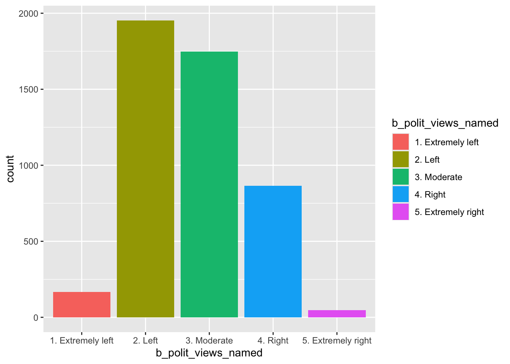
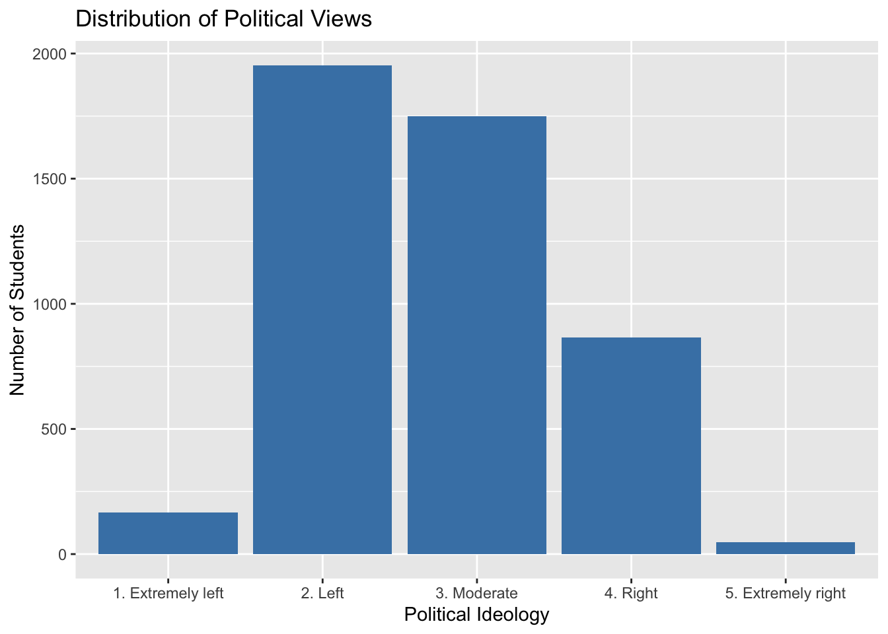
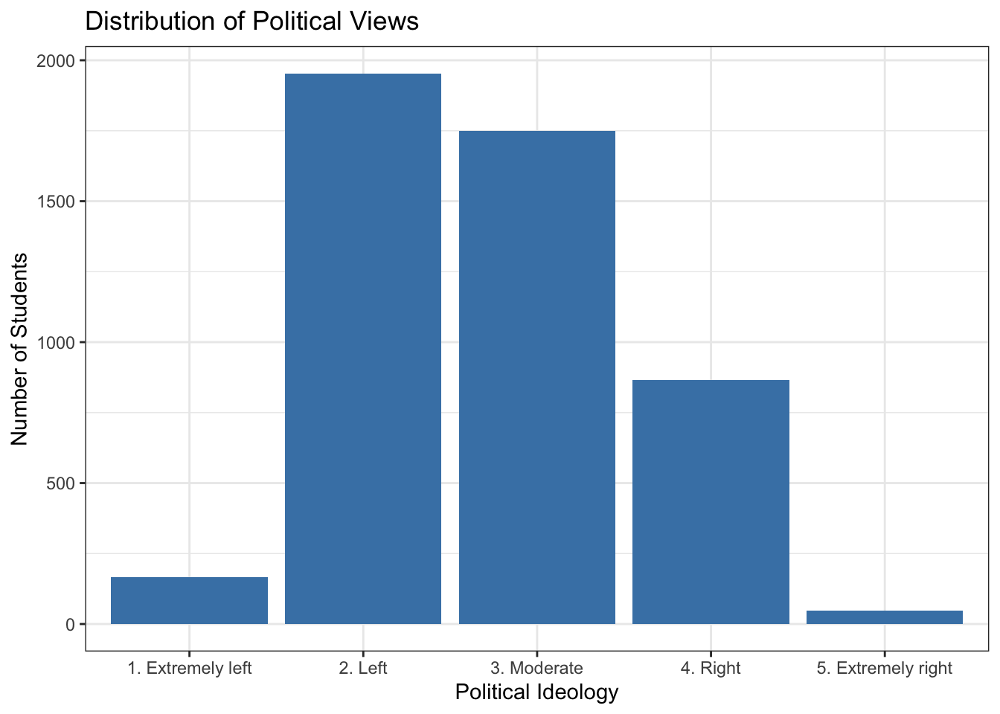
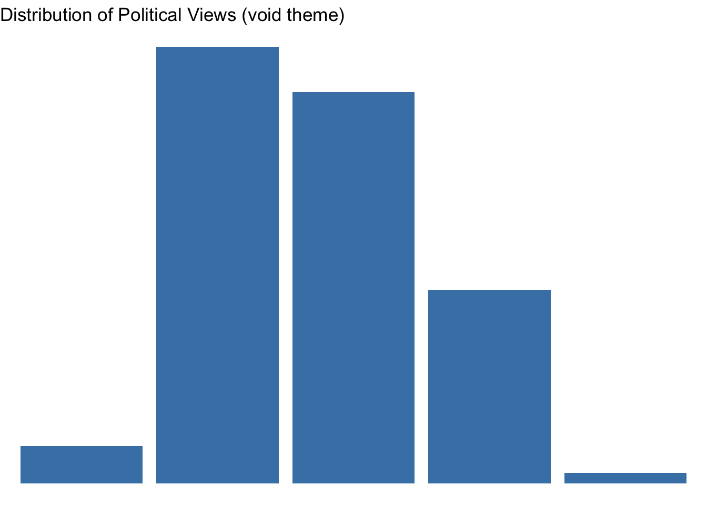
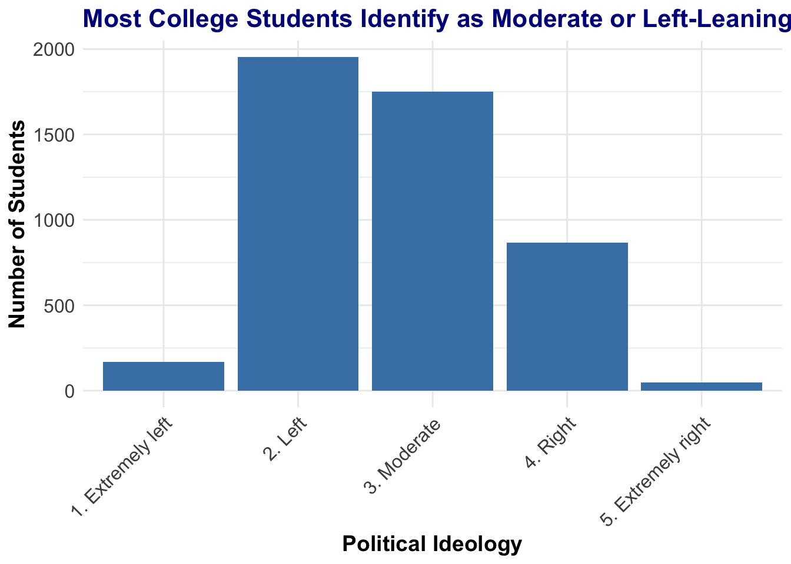
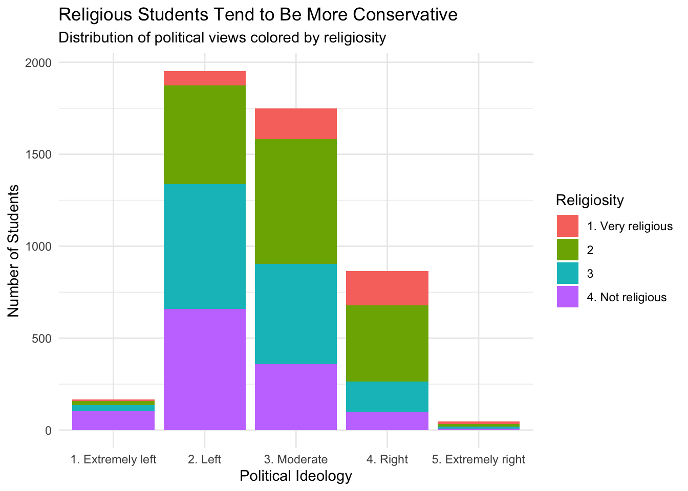
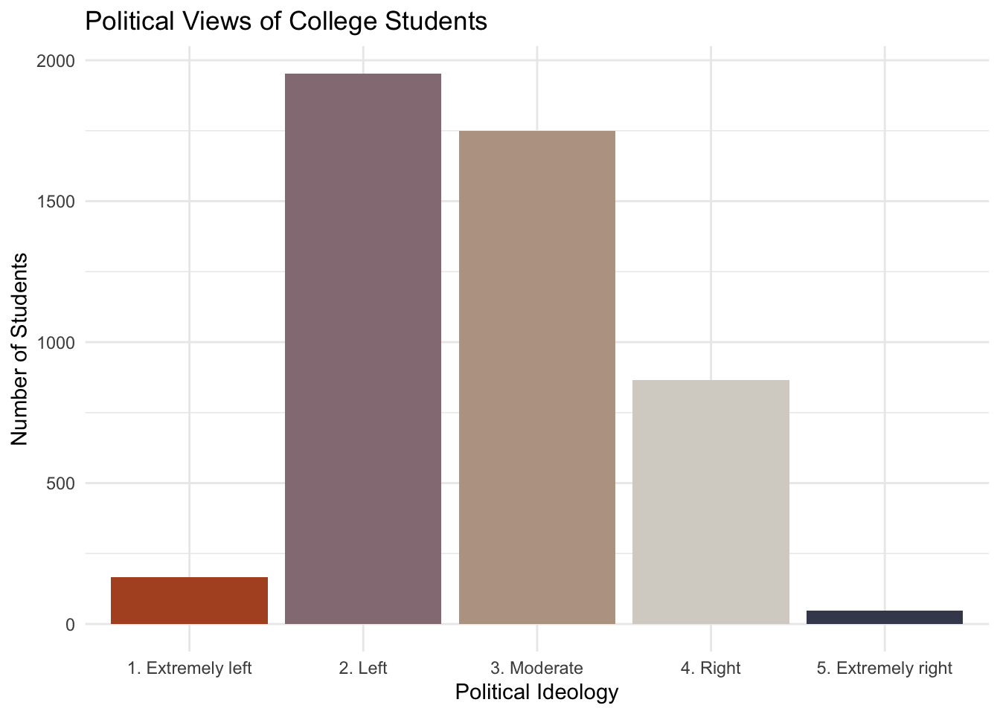
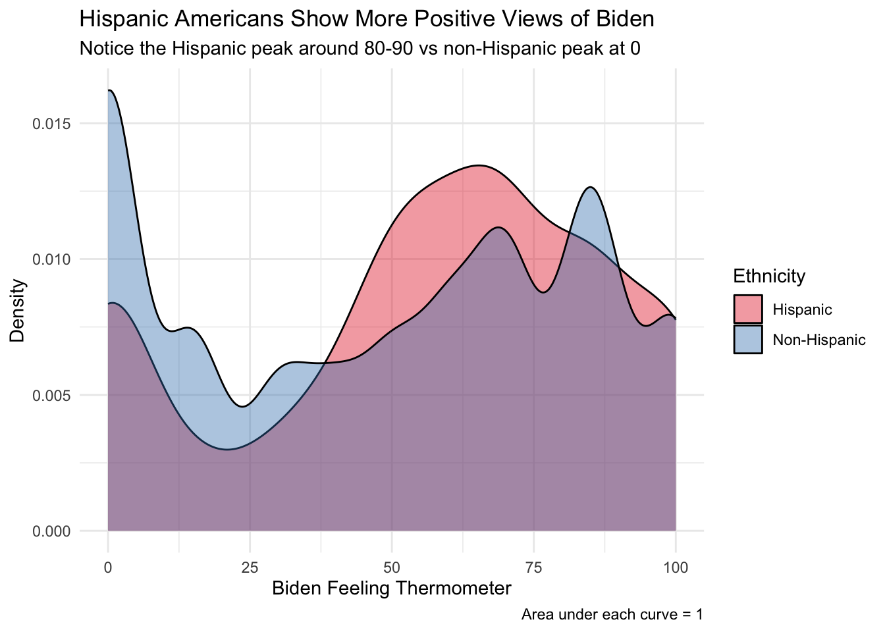

11 Data Visualization Basics - Single Variables
11.1 Learning Objectives
- Understand and apply fundamental principles of effective data visualization
- Create and customize bar plots for categorical data using
ggplot2 - Construct histograms and density plots for continuous variables
- Use visual elements (color, shape, text) strategically to highlight key patterns
- Build visualizations layer by layer using the grammar of graphics
11.2 What Is This For?
Data visualization transforms numbers into pictures that tell stories. A well-crafted visualization can reveal patterns invisible in tables of numbers, communicate complex findings to diverse audiences, and help us make better decisions. Poor visualizations, however, can mislead, confuse, or simply waste everyone’s time.
In this session, we’ll focus on visualizing single variables - the foundation of exploratory data analysis. Whether you’re examining voter demographics, survey responses, or policy outcomes, you need to understand your variables individually before exploring relationships between them. Think of it as getting to know each character in your data’s story before watching them interact.
We’ll use ggplot2, R’s premier visualization package, which implements the “grammar of graphics” - a systematic approach to building visualizations layer by layer. This approach might feel different from clicking buttons in Excel, but it gives you precise control and reproducibility. Once you understand the grammar, you can create any visualization you can imagine.
11.3 Principles of Effective Data Visualization
Before we dive into making graphs, let’s understand how people actually look at and process visual information. This knowledge will guide every design decision we make.
11.3.1 How People Read Graphics
Research on eye tracking shows that when viewers look at a figure, their eyes follow a predictable pattern. The following image illustrates typical eye movements:
Understanding this helps us design more effective visualizations:
- Color - Bright or contrasting colors draw attention first. This is why we should use color strategically, not decoratively.
- Shape - Unusual or prominent shapes catch the eye second. Large bars, outliers, or unique patterns stand out.
- Pattern - Repeated elements or breaks in pattern come next. Our brains are wired to notice when something doesn’t fit.
- Text - Titles, labels, and annotations are read last, but they’re crucial for understanding.
Use these elements strategically. If you want viewers to compare two groups, use contrasting colors. If one category is most important, make it visually prominent while others fade to gray.
Here’s an example of using color effectively to highlight a comparison:
Notice how the strategic use of color draws your eye to the specific comparison the author wants you to make. The other elements fade into the background.
Compare this to a less effective use of color:

In this figure, the color for “B team” is also used for the axes and labels, creating visual confusion. The fix is simple - keep non-data elements (axes, labels) in neutral colors like black or gray.
11.3.2 Three Core Principles
1. Declutter
Remove unnecessary elements that don’t contribute to understanding. Every line, label, and pixel should have a purpose. Common clutter includes:
- Grid lines that are too prominent
- Redundant labels (if your title says “2020 Presidential Election Results”, you don’t need “2020” on every bar)
- Decorative elements that don’t encode information
- Default software outputs that you haven’t consciously chosen
2. Emphasize
Guide viewers to your main point through visual hierarchy:
- Use color intensity to highlight key categories (bright red for the important group, light gray for context)
- Make important comparisons visually obvious (place them next to each other)
- Use size to show importance (bigger = more important)
- Position crucial information prominently (top left for Western readers)
3. Clarify
Ensure your message is unmistakable:
- Write descriptive titles that state the main finding, not just describe the data
- Bad: “Revenue by Quarter”
- Good: “Revenue Increased 45% in Q4 After Marketing Campaign”
- Label axes clearly with units
- Add annotations for important features
- Choose the right chart type for your data
11.3.3 A Transformation Example
Let’s see these principles in action. Here’s a before and after of a real visualization:

This figure has data but no clear message. The viewer has to work hard to extract meaning. Now look at the improved version:
The transformation includes:
- A clear title that states the finding
- Strategic use of color to highlight the key comparison
- Removed unnecessary elements
- Added context through annotations
The second figure tells a story; the first just displays numbers.
11.3.4 Common Pitfalls to Avoid
Let’s learn from others’ mistakes. Here are real examples of what not to do:
Don’t use decorative shapes that distort data:

Forcing data into the shape of a foot might seem creative, but it makes comparisons nearly impossible. Viewers spend more time figuring out the shape than understanding the data.
Don’t create meaningless bar heights:
In this figure, bars representing 29.4% and 2.4% are the same height! The visualization completely fails at its basic job of showing relative quantities.
Don’t use 3D effects or pie charts for complex data:

Pie charts fail when you have many categories because:
- Humans are bad at comparing angles
- Small slices become invisible
- Labels overlap and become unreadable
- The legend becomes a decoding puzzle
Remember: If viewers need to work hard to understand your visualization, you’ve failed - not them.
11.4 Getting Started with ggplot2
Now that we understand the principles, let’s put them into practice using ggplot2. This package revolutionized R graphics by implementing a consistent “grammar” for building visualizations.
11.4.1 Understanding the Grammar of Graphics
The key insight of the grammar of graphics is that any statistical graphic can be built from the same basic components:
- Data: The information you want to visualize
- Aesthetic mappings: How data variables connect to visual properties (position, color, size, etc.)
- Geometric objects: The shapes that represent data (bars, points, lines, etc.)
- Scales: How data values translate to visual values
- Facets: How to split data into subplots
- Coordinate system: How x and y aesthetics combine to position elements
- Theme: Overall visual defaults
In ggplot2, we build graphics by adding these components as layers. This is fundamentally different from software like Excel where you pick a chart type and fill in options. Here, you construct your visualization piece by piece, giving you complete control.
11.4.2 The Layering System
Think of creating a ggplot like painting: you start with a blank canvas, then add layers of paint. Each layer adds new information or modifies what’s already there. This approach has several advantages:
- Flexibility: You can create any visualization by combining simple pieces
- Iterative: You can build incrementally, testing as you go
- Reusable: You can save a basic plot and add different layers for different purposes
- Readable: The code describes what you’re doing step by step
Let’s load the necessary packages:
11.5 Bar Plots for Categorical Data
Bar plots excel at showing frequencies or counts for categorical variables. They’re ideal when you have distinct groups and want to compare their sizes. Unlike continuous data, categorical data has natural divisions that bars represent perfectly.
11.5.1 Understanding the Roommate Study Data
For our bar plot examples, we’ll use data from a natural experiment. Strother et al. (2021) studied whether college students’ political views are influenced by their randomly assigned roommates. This is a great research design - since roommates are randomly assigned, we can study peer influence without worrying that similar people chose to live together.
The researchers surveyed students at two times:
- Baseline survey: Before students met their roommates
- Follow-up survey: After living together for a year
Let’s load and explore this data:
# Load the haven package to read Stata files
library(haven)
# Read the data file
# This data comes in Stata format (.dta), common in social science
roommate <- read_dta("RoommateIdeologyAbridged.dta")
# Let's see what variables we have
glimpse(roommate)## Rows: 7,040
## Columns: 14
## $ respid <chr> "1000371", "1000528", "1000685", "1000842", "1000999", "1001156", …
## $ female <dbl> 1, 1, 1, 0, 0, 1, NA, NA, 0, 0, 1, 0, 1, NA, NA, 1, NA, NA, 1, NA,…
## $ race_white <dbl> 1, 0, 1, 0, 1, 1, NA, NA, 1, 1, 1, 1, 1, NA, NA, 1, NA, NA, 1, NA,…
## $ race_black <dbl> 0, 0, 0, 0, 0, 0, NA, NA, 0, 0, 0, 0, 0, NA, NA, 0, NA, NA, 0, NA,…
## $ race_hispanic <dbl> 0, 0, 0, 0, 0, 0, NA, NA, 0, 0, 0, 0, 0, NA, NA, 0, NA, NA, 0, NA,…
## $ race_other <dbl> 0, 0, 0, 0, 0, 0, NA, NA, 0, 0, 0, 0, 0, NA, NA, 0, NA, NA, 0, NA,…
## $ race_asian <dbl> 0, 1, 0, 1, 0, 0, NA, NA, 0, 0, 0, 0, 0, NA, NA, 0, NA, NA, 0, NA,…
## $ educ_parents <dbl+lbl> 7, 7, 6, 6, 4, 6, NA, NA, 4, 6, 7, 4, 7, NA, NA, 7…
## $ b_religiosity <dbl+lbl> 3, 3, 4, 3, 2, NA, 4, 1, 3, 2, 2, NA, 4, NA, 2, 4…
## $ b_polit_views <dbl+lbl> 1, 3, 2, 2, 3, NA, 2, 3, 2, 2, 3, NA, 2, NA, 2, 2…
## $ f_religiosity <dbl+lbl> 4, 4, 4, 3, 2, 2, NA, NA, 3, 2, 3, 1, 3, NA, NA, 4…
## $ f_polit_views <dbl+lbl> 2, 2, 2, 3, 3, 3, NA, NA, 3, 2, 2, 4, 2, NA, NA, 2…
## $ rm_b_polit_views_mean <dbl> 3.000000, 2.000000, 2.500000, 2.000000, NA, NA, 2.000000, NA, 4.00…
## $ rm_f_polit_views_mean <dbl> NA, 2.0, 3.0, NA, NA, NA, NA, NA, 4.0, 3.0, 2.0, 3.0, 2.0, NA, NA,…Key variables for our visualizations:
b_polit_views: Baseline political ideology (1 = extremely left, 5 = extremely right)b_religiosity: Baseline religiosity (1 = very religious, 4 = not religious)female: Gender indicator (1 = female, 0 = male)
11.5.2 Preparing Data for Visualization
One crucial step before visualization is ensuring our categorical variables are properly formatted. R needs to know these are categories, not just numbers. We’ll also add meaningful labels:
# First, convert political views to a factor
# as.factor() tells R these are categories, not continuous numbers
roommate$b_polit_views <- as.factor(roommate$b_polit_views)
# Check what we have
table(roommate$b_polit_views)##
## 1 2 3 4 5
## 167 1954 1749 865 47# Now add meaningful labels using dplyr's recode function
roommate <- roommate %>%
mutate(
# Create a new variable with descriptive labels
b_polit_views_named = dplyr::recode(b_polit_views,
"1" = "1. Extremely left",
"2" = "2. Left",
"3" = "3. Moderate",
"4" = "4. Right",
"5" = "5. Extremely right"
)
)
# Verify our recoding worked
table(roommate$b_polit_views_named)##
## 1. Extremely left 2. Left 3. Moderate 4. Right 5. Extremely right
## 167 1954 1749 865 47Let’s do the same for religiosity:
# Convert to factor
roommate$b_religiosity <- as.factor(roommate$b_religiosity)
# Add labels (just endpoints for cleaner plots)
roommate <- roommate %>%
mutate(
b_religiosity = dplyr::recode(b_religiosity,
"1" = "1. Very religious",
"2" = "2",
"3" = "3",
"4" = "4. Not religious"
)
)
# Remove any rows with missing data on our key variables
# This ensures our visualizations aren't affected by NAs
roommate <- roommate %>%
filter(!is.na(b_polit_views_named) & !is.na(b_religiosity))
# How many students do we have?
nrow(roommate)## [1] 478111.5.3 Building Your First ggplot
Now for the exciting part - creating our first visualization! We’ll build it step by step to understand how ggplot works.
First, let’s create just the canvas:
When you run this, you’ll see an empty gray rectangle. This is your canvas, waiting for you to add data representations.
Now let’s add a geometric layer - in this case, bars:
# Start with the canvas and add bars
ggplot(data = roommate) + # Note the + sign to add layers!
geom_bar(aes(x = b_polit_views_named))
Let’s break down what just happened:
ggplot(data = roommate)- Creates the base plot using our roommate data+- This plus sign is crucial! It’s how we add layers in ggplotgeom_bar()- Adds a bar geometry (there’s also geom_point, geom_line, etc.)aes(x = b_polit_views_named)- The aesthetic mapping that says “map the political views variable to the x-axis position”
The aes() function is particularly important. It creates the connection between your data and the visual properties of the plot. Think of it as saying “this variable controls this visual aspect.”
11.5.4 Customizing Colors and Appearance
Our plot works but looks pretty bland. Let’s add some color:
# Add a fixed color to all bars
ggplot(data = roommate) +
geom_bar(aes(x = b_polit_views_named), fill = "steelblue")
Notice that fill = "steelblue" is outside the aes() function. This means we’re setting a fixed color for all bars, not mapping color to data.
What if we want each political group to have its own color?
# Map color to the political views variable
ggplot(data = roommate) +
geom_bar(aes(x = b_polit_views_named, fill = b_polit_views_named))
Now fill = b_polit_views_named is inside the aes() function, creating a mapping between data and color. ggplot automatically:
- Assigns a different color to each category
- Creates a legend
- Uses a reasonable default color scheme
This inside/outside distinction is crucial in ggplot:
- Inside
aes(): Create mappings between data and visuals - Outside
aes(): Set fixed visual properties
11.5.5 Adding Labels and Titles
A graph without proper labels is like a story with no proper nounds - technically complete but hard to understand. Let’s add informative text:
# Build a properly labeled plot
ggplot(data = roommate) +
geom_bar(aes(x = b_polit_views_named), fill = "steelblue") +
labs(
x = "Political Ideology", # X-axis label
y = "Number of Students", # Y-axis label
title = "Distribution of Political Views Among College Students",
subtitle = "Survey conducted before random roommate assignment",
caption = "Source: Strother et al. (2021)"
)
The labs() function is your text toolkit. You can specify:
xandy: Axis labelstitle: Main title (state your finding!)subtitle: Additional contextcaption: Data source or notes
11.5.6 Understanding Themes and Further Customization
ggplot2 comes with several built-in themes that change the overall look:
# Save base plot to reuse
p <- ggplot(data = roommate) +
geom_bar(aes(x = b_polit_views_named), fill = "steelblue") +
labs(x = "Political Ideology", y = "Number of Students",
title = "Distribution of Political Views")
# Default theme (gray background)
p
Now let’s see how different themes change the appearance:



# Void theme - removes all non-data elements
p + theme_void() +
labs(title = "Distribution of Political Views (void theme)")
Notice how each theme changes:
- Background: gray (default) vs. white (most others) vs. none (void)
- Grid lines: major and minor (default) vs. subtle (minimal) vs. none (classic)
- Borders: full box (bw) vs. just axes (classic) vs. none (minimal)
- Overall feel: Excel-like (default) vs. publication-ready (bw) vs. modern (minimal)
Beyond preset themes, you can customize every element:
# Detailed customization
ggplot(data = roommate) +
geom_bar(aes(x = b_polit_views_named), fill = "steelblue") +
labs(
x = "Political Ideology",
y = "Number of Students",
title = "Most College Students Identify as Moderate or Left-Leaning"
) +
theme_minimal() + # Start with a clean theme
theme(
# Make axis text larger and bold
axis.text = element_text(size = 12),
axis.title = element_text(size = 14, face = "bold"),
# Make title larger and blue
plot.title = element_text(size = 16, face = "bold", color = "darkblue"),
# Rotate x-axis labels if they overlap
axis.text.x = element_text(angle = 45, hjust = 1)
)
Here we used the theme function to set things like font size, font type, colors and more. It would take far more than one class to go through all of these options, but suffice it to say, that there is a way to control nearly every visual element you see on a plot.
11.5.7 Using Color to Show Relationships
So far we’ve created single-variable visualizations. But color can reveal relationships between variables. Let’s explore how political views relate to religiosity:
# Color bars by religiosity
ggplot(data = roommate) +
geom_bar(aes(x = b_polit_views_named, fill = b_religiosity)) +
labs(
x = "Political Ideology",
y = "Number of Students",
title = "Religious Students Tend to Be More Conservative",
subtitle = "Distribution of political views colored by religiosity",
fill = "Religiosity" # Legend title
) +
theme_minimal()
This creates a “stacked” bar chart. Each bar is divided into segments showing the religious composition of that political group. We can see that very religious students (dark red) make up a larger proportion of conservative students.
Sometimes stacked bars make comparisons difficult. We can place bars side-by-side instead:
# Grouped bar chart
ggplot(data = roommate) +
geom_bar(aes(x = b_polit_views_named, fill = b_religiosity),
position = "dodge") + # This creates groups instead of stacks
labs(
x = "Political Ideology",
y = "Number of Students",
title = "Religious Students Tend to Be More Conservative",
subtitle = "Grouped bars make religiosity patterns clearer",
fill = "Religiosity"
) +
theme_minimal() +
theme(axis.text.x = element_text(angle = 45, hjust = 1))
The position = "dodge" argument tells ggplot to place bars side-by-side rather than stacking them. This makes it easier to compare the height of specific religious groups across political ideologies.
11.5.8 Fun with Color Palettes
While ggplot’s default colors work well, sometimes you want something different. There are many color palette packages available:
# Load the Taylor Swift color palette package (yes, this exists!)
library(tayloRswift)
# Apply Taylor Swift's 1989 album colors to our plot
ggplot(data = roommate) +
geom_bar(aes(x = b_polit_views_named, fill = b_polit_views_named)) +
scale_fill_taylor(palette = "taylor1989") + # Custom color palette
labs(
x = "Political Ideology",
y = "Number of Students",
title = "Political Views of College Students",
fill = "Ideology"
) +
theme_minimal() +
theme(legend.position = "none") # Hide legend since colors match x-axis
There are also more serious color palettes designed for clarity and accessibility:
scale_fill_brewer(): ColorBrewer palettes (great for publications)scale_fill_viridis_d(): Colorblind-friendly palettesscale_fill_grey(): Grayscale for black-and-white printing
11.6 Histograms for Continuous Data
When your variable has many possible values - like test scores, income, or approval ratings - bar plots become impractical. You’d need hundreds of tiny bars! Histograms solve this by grouping continuous data into bins.
11.6.1 Understanding the ANES Data
Let’s switch to a different dataset to explore continuous variables. The American National Election Study (ANES) is one of the most important data sources in political science. Running since 1948, it surveys Americans about their political attitudes, behaviors, and demographics.
We’ll use 2020 data, collected during a pivotal election year marked by the COVID-19 pandemic, racial justice protests, and deep political polarization.
# Load the 2020 ANES data
anes2020 <- read.csv("anes2020.csv")
# Explore the structure
dim(anes2020) # How many respondents and variables?## [1] 8280 12## Rows: 8,280
## Columns: 12
## $ rid <int> 1, 2, 3, 4, 5, 6, 7, 8, 9, 10, 11, 12, 13, 14, 15, 16, 17, 18, 19, 20, 21, 22, …
## $ age <int> 46, 37, 40, 41, 72, 71, 37, 45, 70, 43, 37, 55, 30, 38, 41, 66, 54, 55, 62, 80,…
## $ race <int> 3, 4, 1, 4, 5, 1, 1, 1, 1, 3, 3, 1, 1, 4, 2, 3, 1, 1, 1, 1, 3, 3, 1, 1, 3, 1, 1…
## $ latino <int> 1, 2, 2, 2, 2, 2, 2, 2, 2, 1, 1, 2, 2, 2, 2, 1, 2, 2, 2, 2, 1, 1, 2, 2, 1, 2, 2…
## $ vote12 <int> 1, 1, 1, 1, 1, 1, 1, 2, 1, 2, 2, 1, 2, 1, 1, 2, 1, 1, 1, 1, 2, 1, 2, 1, 2, 1, 1…
## $ vote16 <int> 1, 1, 1, 1, 1, 2, 1, 2, NA, NA, NA, 1, 2, NA, 2, NA, 1, NA, NA, 1, NA, NA, 1, N…
## $ media <int> 2, 3, 1, 3, 2, 2, 3, 4, 3, 2, 4, 3, 1, 1, 3, 2, 2, 2, 2, 2, 2, 3, 2, 3, 3, 3, 2…
## $ partyid <int> 2, 5, 3, 2, 3, 3, 2, 2, 3, 1, 1, 1, 2, 1, 3, 3, 3, 1, 1, 1, 2, 1, 3, 2, 1, 1, 3…
## $ income <int> 21, 13, 17, 7, 22, 3, 4, 3, 10, 11, 9, 18, 1, 21, 3, 7, 22, 20, NA, 5, 12, 6, 2…
## $ obama.th <int> 0, 50, 90, 85, 10, 60, 15, 50, 60, 100, 100, 85, 0, 100, 85, 0, 85, 100, 100, 1…
## $ trump.th <int> 100, 0, 0, 15, 85, 0, 75, 100, 0, 0, 0, 0, 100, 0, 40, 100, 0, 0, 15, 15, 95, 0…
## $ biden.th <int> 0, 0, 65, 70, 15, 85, 50, 50, 85, 85, 100, 60, 0, 85, 60, 0, 60, 85, 85, 70, 0,…For our examples, we’ll focus on:
biden.th: “Feeling thermometer” for Joe Biden (0-100 scale)- 0 = Very cold/negative feelings
- 50 = Neutral
- 100 = Very warm/positive feelings
latino: Whether respondent identifies as Hispanic/Latino
Feeling thermometers are a clever survey tool. Instead of asking “Do you like Biden?” (which forces yes/no), they let respondents express degrees of warmth or coolness, capturing more nuance.
Let’s prepare the data:
# Convert latino to a factor with meaningful labels
anes2020$latino <- as.factor(anes2020$latino)
anes2020 <- anes2020 %>%
mutate(
latino = dplyr::recode(latino,
"1" = "Hispanic",
"2" = "Non-Hispanic"
)
)
# Remove missing values
anes2020 <- anes2020 %>%
filter(!is.na(latino) & !is.na(biden.th))
# Check the distribution of the Biden thermometer
summary(anes2020$biden.th)## Min. 1st Qu. Median Mean 3rd Qu. Max.
## 0.00 15.00 55.00 49.26 85.00 100.0011.6.2 Creating Basic Histograms
Let’s start with base R’s hist() function to understand what histograms do:

This shows the distribution is polarized - many people rate Biden very low (near 0) or very high (near 100), with fewer in the middle. This U-shaped pattern reflects America’s political polarization.
We can improve this basic histogram:
# Customized histogram
hist(anes2020$biden.th,
breaks = 20, # More bins for finer detail
col = "lightblue", # Add color
xlab = "Biden Feeling Thermometer (0-100)",
ylab = "Number of Respondents",
main = "Americans Are Polarized About Joe Biden",
sub = "Note clustering at 0 and 100")
11.6.3 Building Histograms with ggplot2
Now let’s use ggplot2 for more control and better aesthetics:

That’s quite ugly! The default of 30 bins creates a spiky appearance because respondents tend to choose round numbers (50, 60, 70) rather than precise values (57, 63, 71). Let’s fix this:
# Better histogram with fewer bins
ggplot(data = anes2020) +
geom_histogram(aes(x = biden.th),
bins = 10, # Fewer bins smooth out spikes
fill = "darkblue",
color = "white", # White borders between bins
alpha = 0.7) + # Some transparency
labs(
x = "Feeling Thermometer (0 = Very Cold, 100 = Very Warm)",
y = "Number of Respondents",
title = "Americans Are Deeply Polarized About President Biden",
subtitle = "Many rate him 0 or 100, with fewer neutral ratings",
caption = "Source: 2020 American National Election Study"
) +
theme_minimal()
The key parameters for histograms:
bins: Number of bins (default 30)binwidth: Width of each bin (alternative to bins)color: Border color of binsfill: Interior color of binsalpha: Transparency (0 = invisible, 1 = solid)
11.6.4 Comparing Groups with Histograms
How do Hispanic and non-Hispanic Americans differ in their views of Biden? Let’s find out:
# Stacked histogram
ggplot(data = anes2020) +
geom_histogram(aes(x = biden.th, fill = latino),
bins = 10,
alpha = 0.7) +
labs(
x = "Biden Feeling Thermometer",
y = "Count",
title = "Hispanic Americans View Biden More Favorably",
subtitle = "Distribution of Biden thermometer ratings by ethnicity",
fill = "Ethnicity"
) +
theme_minimal()
The stacking makes it hard to compare distributions. We can see there are more non-Hispanic respondents (the bars are taller), but the shape comparison is difficult. Let’s try overlapping histograms instead:
# Overlapping histograms
ggplot(data = anes2020) +
geom_histogram(aes(x = biden.th, fill = latino),
bins = 10,
alpha = 0.5, # Transparency to see overlap
position = "identity") + # Overlap instead of stack
labs(
x = "Biden Feeling Thermometer",
y = "Count",
title = "Hispanic Americans View Biden More Favorably",
subtitle = "Hispanic distribution shifted right (more positive)",
fill = "Ethnicity"
) +
theme_minimal() +
scale_fill_manual(values = c("Hispanic" = "darkred",
"Non-Hispanic" = "darkblue"))
The transparency (alpha = 0.5) lets us see where the distributions overlap. The Hispanic distribution (red) is shifted right compared to non-Hispanic (blue), indicating more positive views.
11.7 Density Plots for Smooth Distributions
Histograms have a fundamental limitation: the appearance depends heavily on bin choices. Density plots solve this by creating smooth curves that estimate the underlying distribution.
11.7.1 Understanding Density Plots
Think of a density plot as a smoothed histogram. Instead of counting observations in bins, it estimates the probability density at each point. The total area under the curve always equals 1.
# Basic density plot
ggplot(data = anes2020) +
geom_density(aes(x = biden.th)) +
labs(
x = "Biden Feeling Thermometer",
y = "Density",
title = "Density Plot Shows Polarization More Clearly Than Histogram"
) +
theme_minimal()
The peaks are even more obvious here - Americans cluster at the extremes with fewer moderate opinions.
11.7.2 Comparing Distributions with Density Plots
Density plots excel at comparing groups because overlapping curves are easier to read than overlapping bars:
# Comparing ethnicities with density plots
ggplot(data = anes2020) +
geom_density(aes(x = biden.th, fill = latino),
alpha = 0.4) + # Transparency for overlap
labs(
x = "Biden Feeling Thermometer",
y = "Density",
title = "Hispanic Americans Show More Positive Views of Biden",
subtitle = "Notice the Hispanic peak around 80-90 vs non-Hispanic peak at 0",
fill = "Ethnicity",
caption = "Area under each curve = 1"
) +
theme_minimal() +
scale_fill_manual(values = c("Hispanic" = "#e41a1c",
"Non-Hispanic" = "#377eb8"))
This clearly shows:
- Non-Hispanic respondents have a huge peak at 0 (very negative views)
- Hispanic respondents peak around 80-90 (very positive views)
- Both groups show polarization, but in opposite directions
11.7.3 Box Plots for Quick Comparisons
When comparing many groups, even density plots become cluttered. Box plots summarize distributions using five key numbers:
# Box plot comparison
ggplot(data = anes2020) +
geom_boxplot(aes(x = latino, y = biden.th, fill = latino)) +
labs(
x = "Ethnicity",
y = "Biden Feeling Thermometer",
title = "Box Plots Summarize Key Distribution Features",
subtitle = "Hispanic median ~60, Non-Hispanic median ~30"
) +
theme_minimal() +
theme(legend.position = "none") # Hide redundant legend
Box plots show:
- Thick line: Median (50th percentile)
- Box edges: 25th and 75th percentiles
- Whiskers: Extend to most extreme non-outlier points
- Dots: Individual outliers
While less detailed than histograms or density plots, box plots excel when comparing many groups simultaneously.
11.8 Putting It All Together: Best Practices
11.8.1 Choosing the Right Visualization
The choice depends on your data and message:
Bar plots are best when:
- You have categorical data with relatively few levels
- You want to show counts or proportions
- The exact values matter
- Example: Votes by political party
Histograms work well when:
- You have continuous data
- You want to see the shape of the distribution
- You’re exploring data for the first time
- Example: Distribution of campaign donations
Density plots excel when:
- You need to compare multiple continuous distributions
- Smooth shapes matter more than exact counts
- You have enough data for reliable smoothing
- Example: Comparing income distributions across states
Box plots are ideal when:
- You need to compare many groups
- You want a quick summary of key statistics
- You’re checking for outliers
- Example: Test scores across 50 schools
11.9 Summary
Effective data visualization combines technical skills with design thinking. We’ve covered:
Technical skills:
- Creating bar plots with
geom_bar() - Making histograms with
geom_histogram() - Drawing density plots with
geom_density() - Making boxplots with
geom_boxplot() - Customizing with themes, colors, and labels
- Using aesthetic mappings to encode information
Design principles:
- Declutter, emphasize, and clarify
- Choose appropriate chart types
- Use color strategically
- Write informative titles and labels
The ggplot2 advantage:
- Layer-by-layer construction
- Consistent grammar across all plot types
- Infinite customization possibilities
- Reproducible and shareable code
Remember: The best visualization is one that communicates your message clearly to your specific audience. Always test your visualizations on others - if they’re confused, iterate and improve.
11.10 Study Questions
11.10.1 Understanding Visualization Principles
What visual elements do viewers notice first when looking at a graph? List them in order and explain why this matters for design.
Explain the three core principles of effective data visualization (declutter, emphasize, clarify) and give a specific example of each.
Why are pie charts problematic for displaying data with many categories? What would you use instead? (Hint: It’s a barplot)
11.10.2 Understanding ggplot2 Structure
In ggplot2, what is a “layer”? Give three examples of different layers you might add to a plot.
Explain the difference between these two code snippets:
geom_bar(aes(x = category), fill = "blue")geom_bar(aes(x = category, fill = "blue"))
What does the
+symbol do in ggplot2? Why is this approach useful?
11.10.3 Creating Bar Plots
When should you use a bar plot instead of a histogram?
In the roommate example, why did we convert
b_polit_viewsto a factor before plotting?What does
position = "dodge"do in a bar plot? When would you use it instead of the default stacking?
11.10.4 Working with Histograms
What does the
binsparameter control in a histogram? What happens if you set it too high or too low?The reading mentions that survey respondents tend to pick round numbers (like 70 or 80). How does this affect histograms and how can you address it?
11.10.5 Understanding Density Plots
What’s the main advantage of density plots over histograms?
When comparing two groups, why might overlapping density curves be easier to read than overlapping histograms?
11.10.6 Data Preparation
Why is it important to remove missing values before creating visualizations?
What’s the purpose of adding labels when converting numeric codes to factors?
11.10.7 Practical Application
You have data on student exam scores (0-100). Would you use a bar plot, histogram, or density plot? Explain your reasoning.
You want to show how many students are in each major (15 different majors). Which visualization would you choose and why?
You’re comparing income distributions across 5 different countries. What type of plot would work best and why?